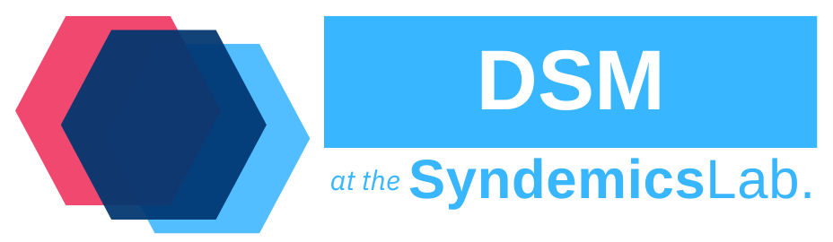

DataManagement


About DataManagement
This repository contains the primary interface for managing all data sources for models developed and maintained at the Syndemics Lab at Boston Medical Center. Currently, all sources are either a CSV file, Database File (SQLite), or an ini structured configuration file. For more information please see the examples below.
License
Copyright 2024-2025, Syndemics Lab, All rights reserved.
Distributed under the AGPLv3 license.
Any questions, please reach out to Jocelyn Vititow or Caroline Savitzky.
Note On Redistribution
While licensed under the AGPLv3 License for fair use, we would appreciate a mention or link to the repository in any publications.
Supported Platforms
As we make use of the std::filesystem library, we require a C++20 compiler. To build with CMake we require a CMake Version >= 3.20.
Development was done with:
- Ubuntu 22.04
- Github Actions
IDEs and Compilers used:
Dependencies
- C++20 STL Implementation
- CMake >= 3.20
- Eigen - For Matrix based operations with data
- spdlog - For logging info, warnings, and errors
- SQLiteCpp - For easy C++ styled manipulation of SQLite, rather than using the C-styled SQLite native API
- Boost Property Tree - For reading the
ini styled config files and parsing them into human usable inputs
- GoogleTest/GTest (optional) - For building and running unit tests
Getting Started
Installation
To use this tool, we recommend installing the project locally and then incorporating it with the CMake find_package() functionality.
Example Installation for Linux:
git clone git@github.com:SyndemicsLab/DataManagement.git
cd DataManagement
mkdir build && cd $_
cmake .. -DCMAKE_BUILD_TYPE=Release
cmake --build . --target install --config Release
If installed system wide, a DataManagementConfig.cmake file will be generated and installed. This allows for use with any CMake project avaliable.
Example Use in CMakeLists.txt:
find_package(datamanagement REQUIRED)
# Here you create your targets necessary
target_link_libraries(my_target PRIVATE datamanagement::datamanagement)
Testing
To run the tests, simply compile with the CMake BUILD_TESTS flag enabled and ensure you include googletest from the dependency list.
git clone git@github.com:SyndemicsLab/DataManagement.git
cd DataManagement
mkdir build && cd $_
cmake .. -DCMAKE_BUILD_TYPE=Debug -DBUILD_TESTS=ON
cmake --build .
./tests/dataTests
Data Types
Tabular Data
Tabular data is handled in a DataTable object. DataTables are made up of rows and columns. DataTable has a constructor intended to handle Comma-Separated-Value (CSV) files. There is future plans to also implement a way to read from an SQL Table into a DataTable object.
Configuration Data
Configuration file data is read via the Configuration object. It parses an expected ini file making use of the boost property tree and allows for optional parameters and a way to parse apart strings into vectors.
Examples
Config
First, an example of the file structure is shown below:
std::ofstream file("test.conf");
file << "[simulation]" << std::endl;
file << "duration = 52" << std::endl;
file << "aging_interval = 260" << std::endl;
file << "[state]" << std::endl;
file << "ouds = Active_Noninjection, Active_Injection, "
"Nonactive_Noninjection, Nonactive_Injection"
<< std::endl;
file.close();
To use the config object, simply create the object and call the get method:
#include <datamanagement/source/Config.hpp>
std::string data = "";
config.GetFromConfig("simulation.duration", data);
We also have the ability to get the categories for each section in an ini config file:
std::vector<std::string> data = {};
config.GetConfigSectionCategories("simulation", data);
CSV Sources
An example CSV is shown:
std::ofstream file("test.csv");
file << "id,name,age\n";
file << "1,Alice,30\n";
file << "2,Bob,25\n";
file << "3,Charlie,35\n";
file.close();
Data is retrieved in an Eigen::MatrixXd format and requires specifying columns and optional where conditions.
Eigen::MatrixXd filtered_data = csv_source.GetData({"id", "age"}, {{"name", "Alice"}});
DB Sources
Setting up the Database File:
SQLite::Database db("test.db",
SQLite::OPEN_READWRITE | SQLite::OPEN_CREATE);
db.exec("CREATE TABLE IF NOT EXISTS test (id INTEGER PRIMARY KEY, name "
"TEXT, age INTEGER);");
SQLite::Transaction transaction(db);
db.exec("INSERT INTO test (name, age) VALUES ('Alice', 30);");
db.exec("INSERT INTO test (name, age) VALUES ('Bob', 25);");
db.exec("INSERT INTO test (name, age) VALUES ('Charlie', 35);");
transaction.commit();
To Select Data from the Database:
#include <datamanagement/source/DBSource.hpp>
std::any storage = std::vector<std::tuple<int, std::string, int>>{};
std::unordered_map<int, datamanagement::source::BindingVariant> bindings;
bindings[1] = 1;
db_source.Select(
"SELECT * FROM test WHERE id = ?;",
[](std::any &storage, const SQLite::Statement &stmt) {
std::vector<std::tuple<int, std::string, int>> *results =
std::any_cast<std::vector<std::tuple<int, std::string, int>>>(
&storage);
results->emplace_back(stmt.getColumn(0).getInt(),
stmt.getColumn(1).getText(),
stmt.getColumn(2).getInt());
},
storage, bindings);
std::vector<std::tuple<int, std::string, int>> results =
std::any_cast<std::vector<std::tuple<int, std::string, int>>>(storage);
Definition db_source.hpp:31
For Batch Execution of Inserts/Creations/Deletions:
std::string query = "INSERT INTO test (name, age) VALUES (?, ?);";
std::vector<std::unordered_map<int, datamanagement::source::BindingVariant>>
batch_bindings;
for (int i = 0; i < 10; ++i) {
std::unordered_map<int, datamanagement::source::BindingVariant>
bindings;
bindings[1] = i;
bindings[2] = "Test" + std::to_string(i);
batch_bindings.emplace_back(bindings);
}
db_source.BatchExecute(query, batch_bindings);
How to Contribute
Currently, this work is supported and under active development by the Syndemics Lab team. Open contributions are welcome but accepted on a very limited basis as this is a functional underpinning for our team's private models. If there are issues or requests please fill out a new issue and we'll respond as soon as possible.